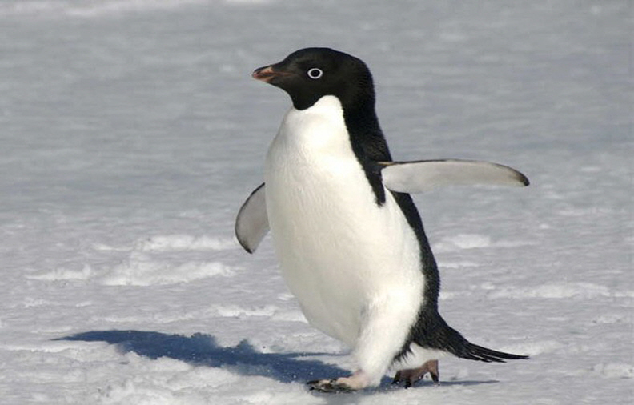
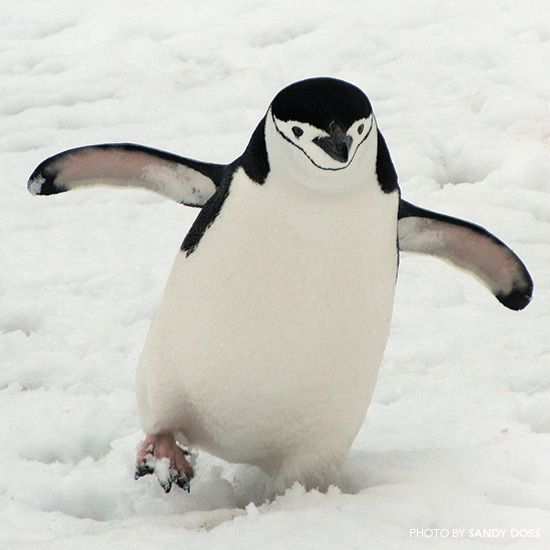
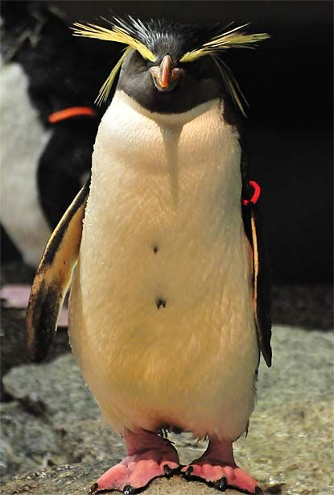

먹이를 잡기 위해 수심 약 535m를 잠수하며, 잠수 시간은 약 18분이다.
암컷이 알을 낳고 먹이를 몸에 비축하기 위해 바다로 떠나면 수컷이 발 위에 있는 주머니에 알을 넣고 품는다. 알을 품고 있는 2~4개월 동안 수컷은 수분 섭취를 위해 눈을 먹는 것을 제외하고 아무것도 섭취하지 않는다.
먹이를 구하기 위해 보통 수심 100~300m 가량을 잠수하며, 잠수 시간은 약 5분이다.
펭귄 |
| 펭귄 |
|---|
| 모든 펭귄은 해양환경에서의 생활에 적응된 해부학적 특성을 가진다. 중간에서 큰 크기의 날지 못하는 바다새로 수영하고 다이빙하는데 적합한 유선형의 몸, 견고하면서도 무거운 뼈를 가졌다. 날개는 딱딱하고 평평한 물갈퀴의 역할을 한다. 단단한 깃은 방수 역할을 하고 완벽하게 물을 차단하는 물질을 생성한다. 펭귄은 먹이를 추적할 때 깊은 곳까지 잠수하고 물 속에서 좀 더 오래 있는다. 가장 오랜시간을 기록된 펭귄은 황제펭귄으로, 18분을 기록했다. |
| 펭귄은 휴식을 취하거나 번식을 위해 육지로 올라온다. 펭귄은 사회성 조류로, 작거나 큰 무리를 이룬다. 알을 적게 낳는 습성 때문인지 모성애 본능이 강한 편이다. 황제펭귄의 경우 새끼를 잃어버린 어미가 다른 부모의 새끼를 납치하려는 시도를 하는 경우도 있다. 다른 펭귄들도 자기와 비슷한 크기의 육식성 조류들을 상대로 새끼를 지키는 모습을 보이는 경우가 많다 |
| 남극에서만 산다는 인식이 있지만 실제로 남극에서 사는 건 6종류(황제, 임금, 젠투, 아델리, 턱끈, 마카로니 펭귄)뿐이다. |
| 출처: [네이버 지식백과] 펭귄 [Penguin] (서울동물원 동물정보), [나무위키] 펭귄 |
|
|
이름(영어 이름) : | 황제펭귄(Emperor Penguin) | |
이름(영어 이름) : | 임금펭귄(King Penguin) |
| 분류 : | 동물계 - 펭귄과 - 황제펭귄 | 분류 : | 동물계 - 펭귄과 - 임금펭귄 | ||
| 특징 : | 현재 존재하는 펭귄 중 몸집이 가장 크다. 키는 최대 122cm, 몸무게는 22.7~45.4kg이고, 수컷이 암컷보다 약간 더 크다. 먹이를 잡기 위해 수심 약 535m를 잠수하며, 잠수 시간은 약 18분이다. 암컷이 알을 낳고 먹이를 몸에 비축하기 위해 바다로 떠나면 수컷이 발 위에 있는 주머니에 알을 넣고 품는다. 알을 품고 있는 2~4개월 동안 수컷은 수분 섭취를 위해 눈을 먹는 것을 제외하고 아무것도 섭취하지 않는다. | 특징 : | 현재 존재하는 펭귄 중에서 두 번째로 몸집이 크다. 키는 약 90cm, 몸무게는 11~16kg이다.
먹이를 구하기 위해 보통 수심 100~300m 가량을 잠수하며, 잠수 시간은 약 5분이다. | ||
| 추가 정보를 알고 싶다면? | 추가 정보를 알고 싶다면? | ||||

|
이름(영어 이름) : | 젠투펭귄(Gentoo Penguin) |  | 이름(영어 이름) : | 아델리펭귄(Adelie penguin) |
| 분류 : | 동물계 - 펭귄과 - 젠투펭귄 | 분류 : | 동물계 - 펭귄과 - 아델리펭귄 | ||
| 특징 : | 황제펭귄과 킹펭귄에 이어 현존하는 펭귄 중 세 번째로 몸집이 크다. 키는 51~90cm, 몸무게는 4.5~8.5kg이다. 펭귄 중에서 가장 긴 꼬리를 가졌으며, 걸을 때 빗자루 형태의 긴 꼬리가 바닥을 쓴다. | 특징 : | 몸길이 약 75cm이다. 짧은 다리로 곧추 서고 날개는 지느러미 모양으로 변화되었다. 귀여운 외모와는 달리, 성격이 사납고 공격적이다. 이 펭귄은 조약돌로 집을 짓는데 다른 펭귄의 조약돌을 도둑질하거나 자리를 차지하기 위해 약한 황제펭귄의 새끼들을 쫓아내기도 한다. | ||
| 추가 정보를 알고 싶다면? | 추가 정보를 알고 싶다면? | ||||
|  | 이름(영어 이름) : | 턱끈펭귄(Chinstrap Penguin) |  | 이름(영어 이름) : | 마카로니펭귄(macaroni penguin) |
| 분류 : | 동물계 - 펭귄과 - 턱끈펭귄 | 분류 : | 동물계 - 펭귄과 - 마카로니펭귄 | ||
| 특징 : | 몸길이 약 68cm, 몸무게 약 6kg이다. 수컷이 암컷보다 조금 크며, 양육을 하거나 털갈이를 하는 시기에는 몸무게가 3kg 이하로 내려가기도 한다. 흰색 털 부분이 얼굴 쪽까지 덮여져 있으며 턱 쪽에 끈 형태의 검은 털이 있다는 것이 턱끈펭귄만의 가장 큰 특징이다. | 특징 : | 몸무게는 4.2㎏에 몸길이는 70cm 정도이다. 가장 눈에 띄는 특징은 이마 중앙에서 발생하는 노란색 문장이며, 목 뒤로 연장된다. | ||
| 추가 정보를 알고 싶다면? | 추가 정보를 알고 싶다면? | ||||
2020년 6월
2015442 양현서